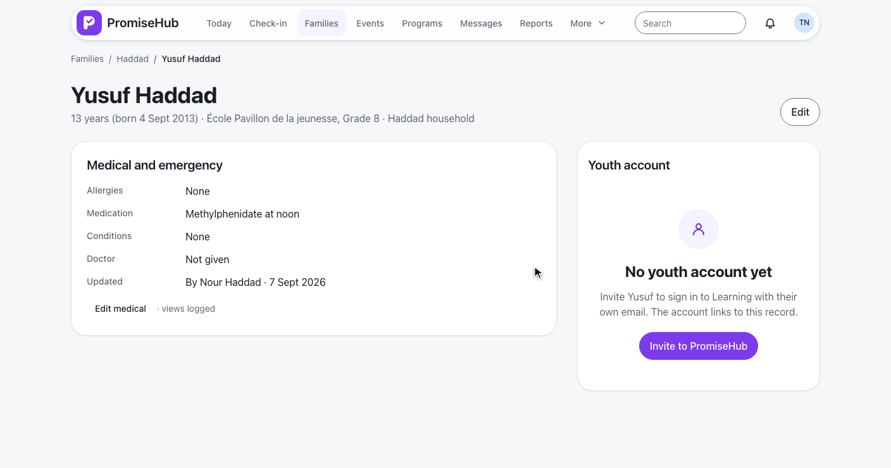
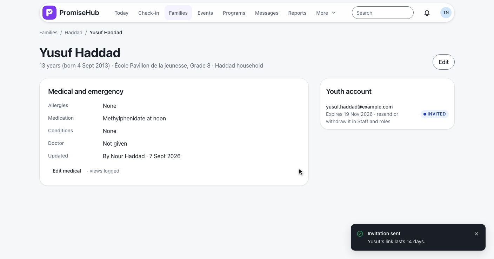
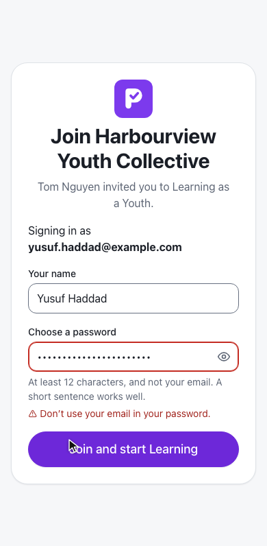
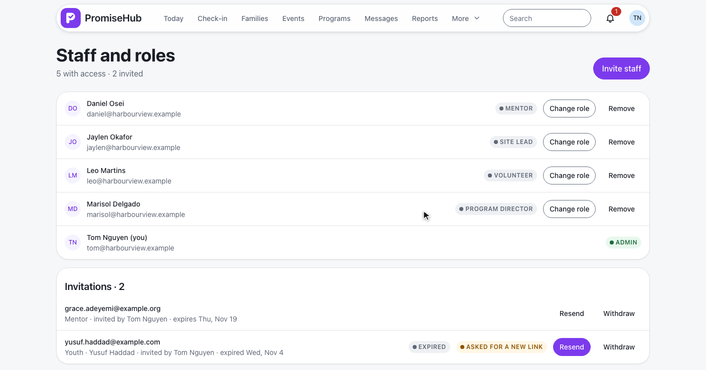
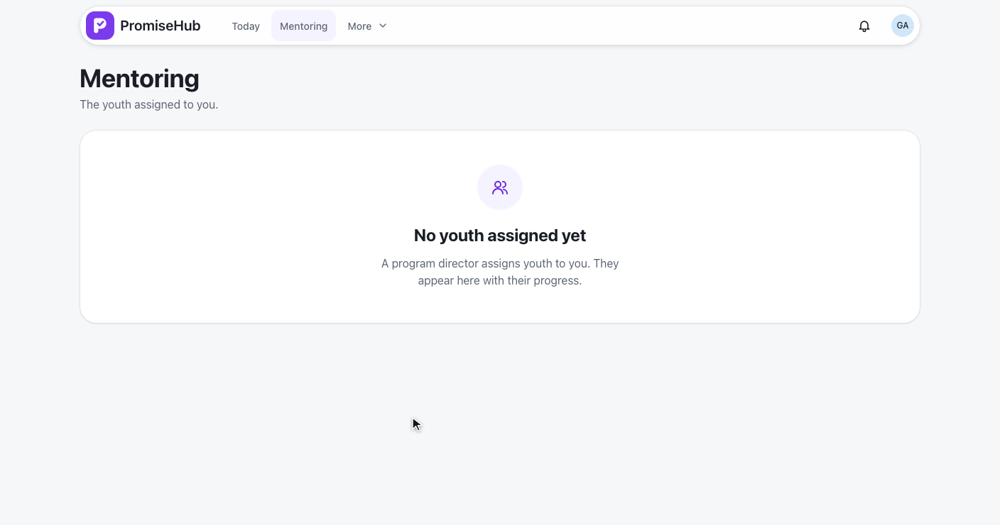

PromiseHub · Video 51
Accept an invitation as a youth or mentor
Invited from the child record or Staff and roles, one password rule, a fresh link when it expires
Invited from the child record or Staff and roles, one password rule, a fresh link when it expires
| Role | Invited from | Lands on |
|---|---|---|
| Youth | Their child record, Learning on | Learning |
| Mentor | Staff and roles, Mentoring on | Mentoring |
| Volunteer | Staff and roles | Today |
| Staff roles | Staff and roles | The phone step |
StaffInvitation.ChildId · ADR 0045
Youth account card, then invite-youth.


Learning off → 404 · another organization's child → 404 · other roles → 403
| Invitation | Answer |
|---|---|
| Mentor, Mentoring on | 201, emailed |
| Mentor, Mentoring off | 422 “Turn on Mentoring to invite mentors.” |
| Volunteer | 201, emailed |
| Youth from Staff and roles | 422 “Invite youth from their child record.” |
Email in the password is refused; then Learning.
Mentor, lands on Mentoring.
410 “expired”, then 202 for the request.
A fresh 14-day link; the old one answers 410.
| Case | Answer |
|---|---|
| Learning off, youth-account endpoints | 404 |
| Another organization's child or invitation | 404 |
| Program director, site lead, participants | 403 |
| Password with the email's name | 422 on accept and reset |
| Used or withdrawn link | 410 with the reason |




Next: a guardian gives consent for a youth